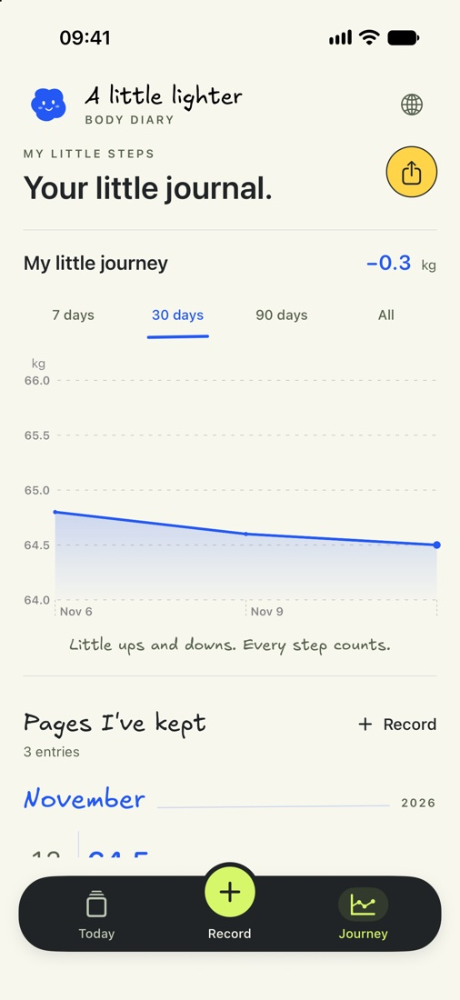
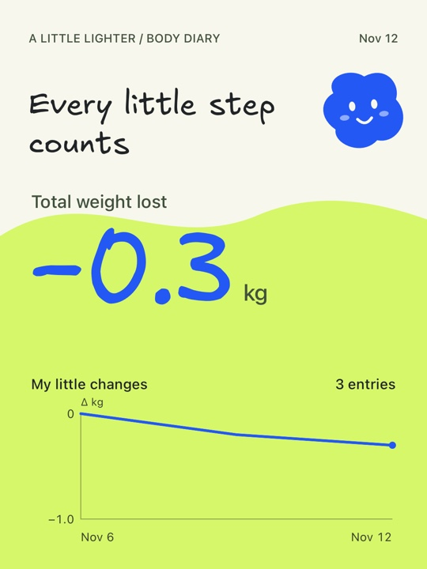

How to Keep a Weight Loss Journal on iPhone
Start a private weight loss journal on iPhone with A Little Lighter. Log your weight and mood, review your progress over time, and share a card if you choose.
What to write in a weight loss journal
Start with the date and your reading. Add a mood or a sentence about the day if there’s something you want to remember. You might note how you slept, how your schedule changed, or a walk you enjoyed. A short entry is easy to scan when you look back.
In A Little Lighter, tap Record, enter your weight in kilograms, and choose a mood. A sample entry might read Nov 9 · 64.6 kg · Good · A walk after dinner.
Tap Save & make my card to keep it. If you save another reading for the same date, the app updates that day’s entry.
Review your weight trend over time
Open Journey and choose 7 days to see recent entries or 30 days or 90 days for a longer view. The change shown is the difference between the first and last entries in that range. Revisit the notes below the chart to remember what was happening at the time.
In the sample below, three entries go from 64.8 kg on November 6 to 64.5 kg on November 12. The chart shows a change of −0.3 kg. To make a habit of checking in, pick a day to look back and write down one thing you’d like to carry into next week. CDC guidance on reviewing progress


Keep your journal private and share a milestone
A Little Lighter stores your journal on your iPhone and lets you log entries offline without an account. You can export a CSV to keep your own copy. When you want to share a milestone, choose a card style and add a few words. The card shows the change and a relative trend, while your exact starting and current weights stay in your journal. See how to share a progress card